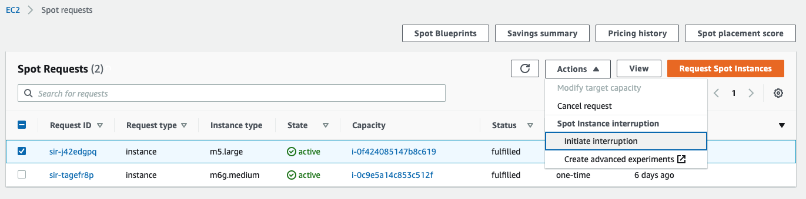
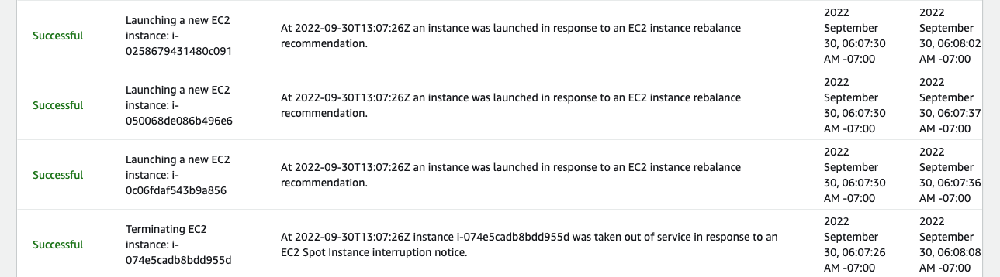

You can launch Spot Instances on spare EC2 capacity for steep discounts in exchange for returning them when Amazon EC2 needs the capacity back. When Amazon EC2 reclaims a Spot Instance, we call this event a Spot Instance interruptions.
When using Spot Instances, you need to be prepared for Spot Instance interruptions. One common method is to test the resiliency of your application by simulating Spot interruptions. You can trigger the Spot interruptions using AWS Fault Injection Simulator (FIS) by targeting individual Spot Instances or a subset of instances managed by services such as ASG and EC2 Fleet.
To trigger a Spot Instance interruption from the Amazon EC2 console, you just need to navigate to the Spot Request section. Select a Spot Instance request and then choose Actions and then Initiate interruption. Behind the scenes, we then use AWS FIS to inject the interruption in your selected Spot Instance.

Currently, AWS FIS has a Service Quota of maximum of 5 resources per experiment target per account per region, and Service Quota is not configurable . This means that even if your experiments targets more than 5 EC2 Spot instances, AWS FIS limits itself to 5 EC2 Spot instance being interrupted per experiment. You can get over this limit by running more than 1 experiment at a time.
To use AWS FIS, you run experiments on your AWS resources to test your theory of how an application or system will perform under fault conditions. To run experiments, you first create an experiment template. An experiment template is the blueprint of your experiment. It contains the actions, targets, and stop conditions for the experiment.
In this section, you 1- create an IAM role that grants AWS FIS the permissions to execute the experiment, 2- create a FIS experiment template, and 3- and run the experiment to trigger Spot Instance interruption.
To use AWS FIS, you must create an IAM role that grants AWS FIS the permissions required so that AWS FIS can run experiments on your behalf. You specify this experiment role when you create an experiment template. For more information, see Create an IAM role for AWS FIS experiments.
cat <<EoF > ./fis_role_trust_policy.json
{
"Version": "2012-10-17",
"Statement": [
{
"Sid": "AllowFISExperimentRoleAssumeRole",
"Effect": "Allow",
"Principal": {
"Service": [
"fis.amazonaws.com"
]
},
"Action": "sts:AssumeRole"
}
]
}
EoF
aws iam create-role --role-name my-fis-role --assume-role-policy-document file://fis_role_trust_policy.json
cat <<EoF > ./fis_role_permissions_policy.json
{
"Version": "2012-10-17",
"Statement": [
{
"Sid": "AllowFISExperimentRoleEC2Actions",
"Effect": "Allow",
"Action": [
"ec2:RebootInstances",
"ec2:StopInstances",
"ec2:StartInstances",
"ec2:TerminateInstances"
],
"Resource": "arn:aws:ec2:*:*:instance/*"
},
{
"Sid": "AllowFISExperimentRoleSpotInstanceActions",
"Effect": "Allow",
"Action": [
"ec2:SendSpotInstanceInterruptions"
],
"Resource": "arn:aws:ec2:*:*:instance/*"
}
]
}
EoF
aws iam put-role-policy --role-name my-fis-role --policy-name my-fis-policy --policy-document file://fis_role_permissions_policy.json
export FIS_ROLE_ARN=$(aws iam get-role --role-name my-fis-role | jq -r '.Role.Arn')
In this step you create an experiment template that sends Spot interruption to Spot Instances launched via the EC2 Auto Scaling group or EC2 fleet in earlier chapters.
AWS FIS experiment template contains:
An action, it is an activity that AWS FIS performs on an AWS resource during an experiment. In this case, you use a preconfigured action aws:ec2:send-spot-instance-interruptions, that sends a Spot Instance interruption notice to target Spot Instances two minutes before interrupting them. The action also sends an EC2 instance rebalance recommendation based on durationBeforeInterruption parameter. In this case you set preconfigured Action aws:ec2:send-spot-instance-interruptions with durationBeforeInterruption set to 2 minutes. You can change to a value greater than 2 minutes to represent a EC2 Instance rebalance recommendation coming ahead of the Spot Instance interruption notice.
A target, it is one or more AWS resources on which AWS FIS experiment performs an action during an experiment. In this case, you set a target with aws:ec2:spot-instance as the resource type and filter the Spot Instances launched via ASG using resourceTags set to “aws:autoscaling:groupName”: “EC2SpotWorkshopASG”.
A stop condition, it is a mechanism by AWS FIS to stop an experiment if it reaches a threshold that you define as an Amazon CloudWatch alarm. In this case, the experiment runs without a stop condition.
cat <<EoF > ./spot_experiment.json
{
"description": "Test Spot Instance interruptions",
"targets": {
"SpotInstancesInASG": {
"resourceType": "aws:ec2:spot-instance",
"resourceTags": {
"aws:autoscaling:groupName": "EC2SpotWorkshopASG"
},
"filters": [
{
"path": "State.Name",
"values": [
"running"
]
}
],
"selectionMode": "PERCENT(50)"
}
},
"actions": {
"interruptSpotInstance": {
"actionId": "aws:ec2:send-spot-instance-interruptions",
"parameters": {
"durationBeforeInterruption": "PT2M"
},
"targets": {
"SpotInstances": "SpotInstancesInASG"
}
}
},
"stopConditions": [
{
"source": "none"
}
],
"roleArn": "${FIS_ROLE_ARN}",
"tags": {}
}
EoF
export FIS_TEMPLATE_ID=$(aws fis create-experiment-template --cli-input-json file://spot_experiment.json | jq -r '.experimentTemplate.id')
To run the experiment, you use start-experiment command to run the template created earlier. The experiment can be run multiple times to validate the results of running your application on EC2 Spot.
aws fis start-experiment --experiment-template-id $FIS_TEMPLATE_ID
As the result of this experiment, you see that 50% of the Spot Instances launched by the Auto Scaling group receive the Rebalance Recommendation signals. Note that this is less than the Service Quota of 5, which is the maximum number of EC2 Spot instance that can be interrupted by a single experiment. When the actions on this experiment is complete:
The experiment may fail if you do not have any Spot Instances running in your EC2 Auto Scaling group or EC2 Fleet. If you encounter an error that the experiment has failed, scale up the EC2 Auto Scaling group or EC2 Fleet so that EC2 Spot instances are provisioned.
The Auto Scaling group setup in the example has Capacity Rebalance enabled, and hence the Auto Scaling group will start to launch EC2 Spot replacement instances when the Spot instances receive the interruption signal. You can see these events in the ASG.

With these tests, you can validate the resiliency of your workload to the Spot interruptions, and optionally improve the workload resiliency by implementing check-pointing or cleanup tasks.